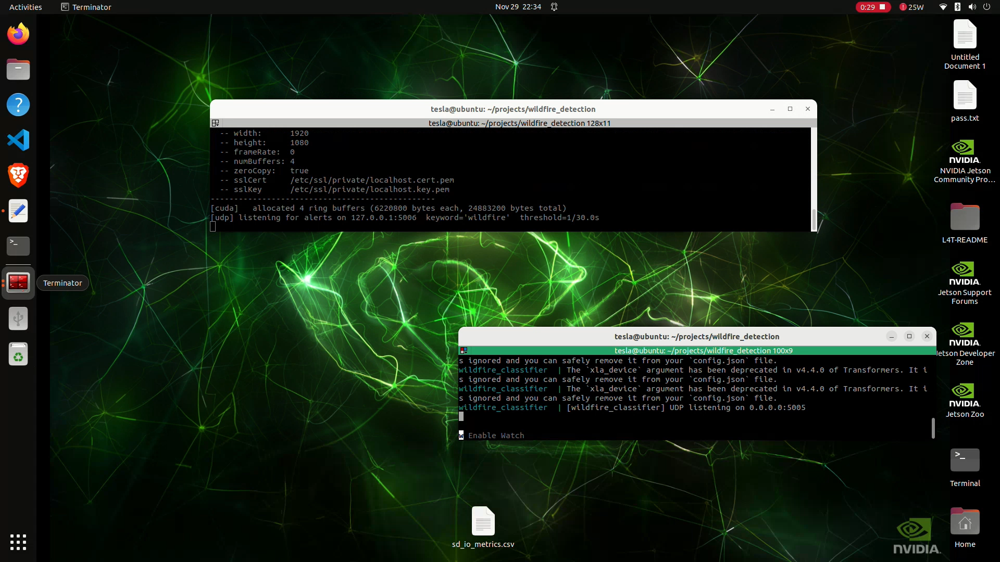
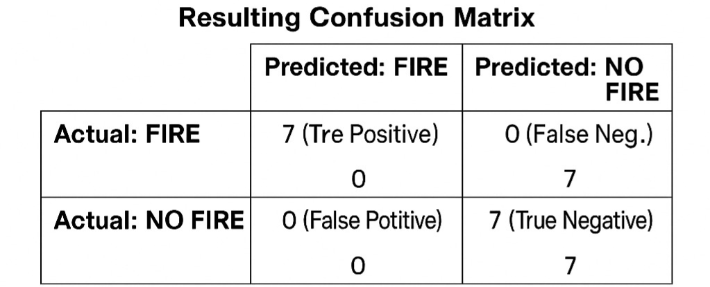
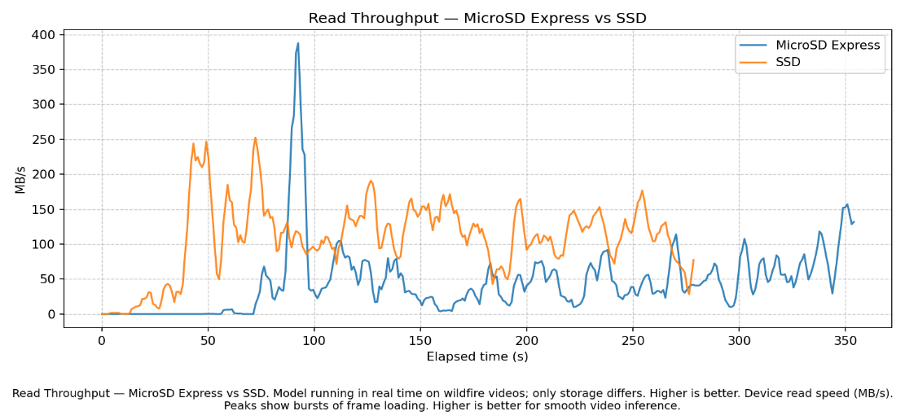

EmberEye targets early fire and smoke cues near the ground, where fast local decisions can support human verification.
Abstract
Wildfires require early detection, but human watchtowers, satellites, and wide-area monitoring systems can be limited by cost, coverage, latency, or image resolution. EmberEye explores an edge-AI pipeline for detecting early fire and smoke signs close to the camera source. The system runs on an NVIDIA Jetson Orin Nano and processes a live camera feed with a compact vision-language model. Scene descriptions are sent over UDP to a lightweight MNLI zero-shot classifier that decides whether the text indicates wildfire or smoke. Fast storage supports rolling video buffers, evidence clips, logs, and swap during real-time inference. The project was tested on recorded wildfire footage and live camera input. According to the project report, the evaluation prioritized low false negatives and achieved high recall on the tested data.
System
The system is organized as a modular Docker Compose pipeline. A vision-language service describes frames, a classifier service interprets the description, and the video layer overlays alerts while keeping a circular evidence buffer.
Camera
↓
wildfire_detection container
↓
Vision-Language Model
↓
Scene description text
↓ UDP
wildfire_classifier container
↓
MNLI semantic classification
↓
WILDFIRE / NO_WILDFIRE
↓ UDP alert
Video overlay + circular buffer + evidence clip
Target edge platform: NVIDIA Jetson Orin Nano.

Runtime services communicate through short UDP messages to avoid stale processing backlog.
Method
1. Scene Understanding with VLM
The project evaluates compact VILA variants suitable for Jetson deployment. The prompt asks the model to describe the scene in detail and report whether smoke is visible, balancing broad scene understanding with smoke sensitivity.
describe the scene in detail, and what is happening in it. Do you see smoke?
2. UDP Text Streaming
The VLM emits scene descriptions to the classifier over UDP. Messages are short, latency matters, and dropping an occasional stale packet is preferable to accumulating a delayed queue.
3. MNLI Semantic Classification
The classifier uses typeform/distilbert-base-uncased-mnli for zero-shot comparison against wildfire and no-fire semantic labels. The threshold is tuned toward low false negatives.
4. Alert and Evidence Clip
Repeated WILDFIRE decisions within a time window trigger an alert. The video module overlays status and saves recent frames from a circular buffer as an evidence clip for later review.
Results
The project report emphasizes recall and false-negative reduction, because missed wildfire events are the most critical failure mode.
96.77%Accuracy
100%Recall
96.77%Precision
0%False-negative rate
3.3%False-positive rate
1080pCamera/video target

Confusion matrix extracted from the project report.

Storage throughput during real-time wildfire video inference.Swap behavior while running the model pipeline.
Observed Limitations
Fog and smoke-like scenes can confuse semantic labels.
Occasional VLM hallucinations can create false alerts.
Borderline cases depend on score competition between candidate labels.
Mitigations include stronger no-fire labels, N-fire alert windows, and aggregate scoring over fire-label groups.
Demo
Live camera frames are described by the VLM and classified by the semantic fire/no-fire classifier in real time.
Roy Cohen - CV
Electrical Engineering student at the Technion, focused on embedded AI, computer vision, signal processing, and real-time systems.